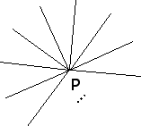
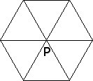

| To show that no other regular polygon can tile the plane, suppose
regular n-gons tile the plane, and k regular
n-gons meet at a point P |
 |
|
| Because k equal angles
meet at P, each angle must be 360/k. Therefore, each n-gon has an
angle sum of n(360/k). |
| Drawing line segments from the center of a
regular n-gon to its vertices
divides the n-gon into n isosceles triangles, each
with apex angle 360/n. |
 |
|
| Consequently, the base angles of the
isosceles triangles are (1/2)(180 - 360/n) and so
the angle sum of a regular n-gon is |
| n*2*(1/2)*(180 - 360/n) = n*180 - 360. |
| Equating the expressions for the angle sum of a regular n-gon gives |
| 360/k = 180 - 360/n |
| and so |
| 1/k + 1/n = 1/2 |
| Cross-multiplying by 2nk |
| 2n + 2k = nk so nk - 2k - 2n + 4 = 4 and (n - 2)(k - 2) = 4 |
| Because n and k are integers and the product (n - 2)(k - 2) is 4,
the factors must be 4*1, 2*2, or 1*4.
These give n = 6, k = 3, n = 4, k = 4 or
n = 3, k = 6, the hexagon, square, and triangle. |